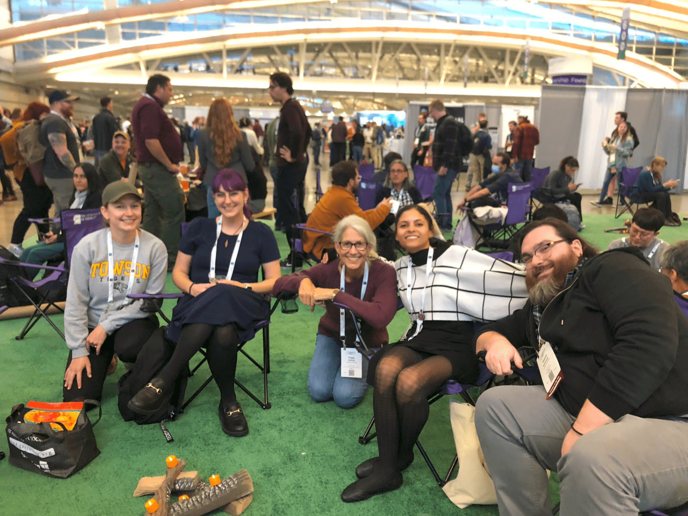
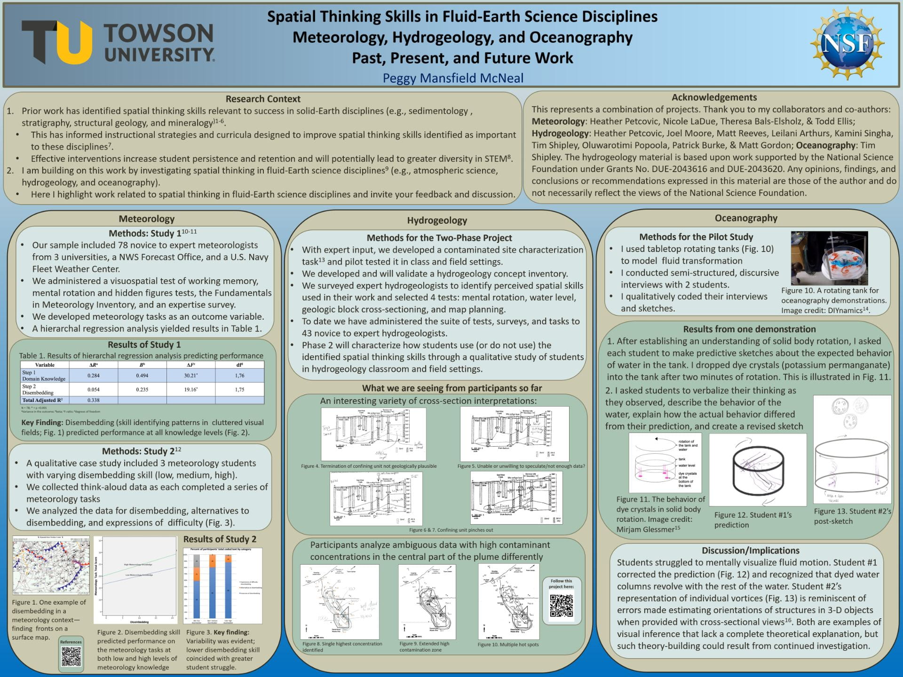

We study how people learn in fluid-Earth science disciplines — oceanography, atmospheric science, and hydrogeology — with a focus on the spatial reasoning these fields demand.
Our work spans three audiences: undergraduate students, future K–12 teachers, and the geoscience education research community. We pair rigorous, discipline-based education research methods with hands-on tools — rotating tanks, density demonstrations, and field studies of severe weather — to understand how spatial thinking develops and how experts pass it on to students.
Current Projects
Spatial Thinking in Hydrogeology
How students and experts predict contaminant movement through the subsurface. (NSF #2043616 / 2043620)
Density & Rotating Tanks
Using a rotating-tank lab to study how students reason about stratification and geophysical fluid dynamics. (NSF DUE-2225637)
Cognition in the Wild
Embedding researchers in convective field studies to see how experts and students reason about severe weather. (NSF AGS-2413370 / 2413371)
Atmospheric Science Education Research
Building a discipline-based education research community in the atmospheric sciences. (NSF AGS-2224006)
Spatial Thinking in Meteorology
Identifying the spatial reasoning skills essential to thinking and learning in meteorology.
Draw an Earth Scientist
Using student drawings to investigate conceptions of who geoscientists are.

